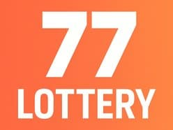

Play & Earn on 77 Lottery

77 Lottery is a trusted online lottery platform in India. Play games, earn rewards, and withdraw instantly via UPI or Paytm.
Introduction
77 Lottery is one of India's leading online lottery platforms. Whether you are a beginner or a seasoned player, our platform offers a seamless experience to play, win, and withdraw your earnings instantly. Enjoy daily draws, weekly jackpots, and special events designed to maximize your chances of winning.
Key Features
- Instant withdrawals via UPI & Paytm
- Secure and licensed lottery system
- Mobile-friendly interface for on-the-go play
- Exciting referral program for extra earnings
- Daily, weekly, and special draws
- Transparent draws with verifiable results
User Testimonials
Ravi K.: "I love playing on 77 Lottery! The payouts are instant and the interface is smooth. Highly recommend it!"
Neha S.: "Joining 77 Lottery was the best decision. Referral bonuses and daily draws keep me engaged."
How to Play & Earn
Getting started is simple:
- Step 1: Register on our secure platform.
- Step 2: Choose a lottery game that suits you.
- Step 3: Buy tickets and participate in draws.
- Step 4: Check results and claim winnings instantly via UPI or Paytm.
- Step 5: Refer friends to earn bonus rewards and climb the leaderboard.
Safety & Security
- Encrypted transactions and secure data storage
- Licensed platform with verified draws
- Regular audits to ensure fair play
- Strict privacy policy to protect your information
Frequently Asked Questions (FAQ)
- Is 77 Lottery legal in India? Yes, we operate under Indian online lottery regulations.
- How do I register an account? Click Register, enter your phone number and required details, then verify using the OTP sent to your mobile to complete registration.
- What payment methods are accepted? We accept UPI and Paytm for deposits and withdrawals. Additional payment methods may be supported depending on your region.
- How do I withdraw my winnings? Withdrawals are instant via UPI or Paytm.
- How fast are withdrawals? Most withdrawals are instant or completed within a few minutes. In rare cases bank or payment provider delays may extend processing time.
- Are there fees for deposits or withdrawals? Basic deposits and withdrawals are usually free; some payment providers or special circumstances may involve small fees. Check the Wallet section for details.
- Do I need to complete verification (KYC)? For higher withdrawal limits or to comply with regulations you may be asked to complete a simple verification process (KYC). Follow the in-app instructions if requested.
- Are minors allowed to play? No. You must be at least 18 years old to use 77 Lottery. We use age-gating and may request verification if necessary.
- Can I play on mobile devices? Absolutely, 77 Lottery is fully mobile-optimized.
- Is my data secure? Yes. We use encrypted connections, secure servers and industry-standard practices to protect user data and transactions.
- Are there referral rewards? Yes, earn bonuses by referring friends.
- How do I change my account details? You can change your account details on your account setting, but for some changes, you will need to contact the customer service for help
- Are there any rules that is on 77Lottery? Yes, there is. Such as using only a single account to avoid multiple same IP, multiple same Phone number or multiple same information. If there is some account detected of it, the platform will deem that you have forfeit your winnings and suspend your account for breaking the rules. The another rules is by illegal betting which can get you the same punishment as the others.
- What is illegal betting? Illegal betting is the terms that 77Lottery use to detect any cheating such as playing wingo and betting 2 different color at the same session, or betting on both big and small on the same session, or betting on all of the numbers on the same session.
- Are bonuses taxable? Tax rules vary by jurisdiction. Users are responsible for understanding and complying with local tax laws related to winnings and bonuses.
Looking for More Exciting Opportunities?
BharatClub offers a wider variety of games, higher earning potential, and a trusted play-to-earn platform. Many players choose BharatClub for additional rewards and challenges.
Explore BharatClub